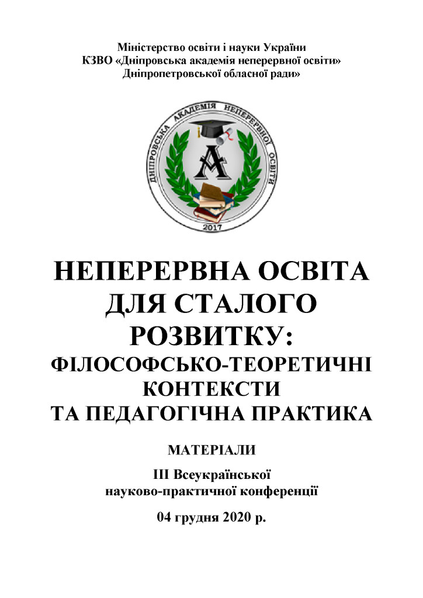
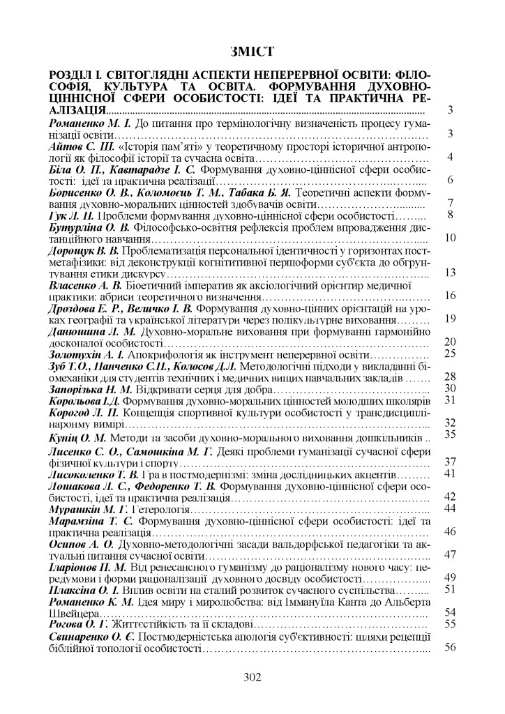

{kind=link}
Ліна Костенка в «Скіфській Одіссеї» поставила ключові та парадоксальні запитання для розуміння історії України в контексті прийнятої сьогодні парадигми про грецьку колонізацію: «Наука вглиб, і праця титанічна. Загадка, нерозгаданих давен, – чи це була експансія етнічна, чи це союз споріднених племен?», «Що тут було за праворітьми світу? Чом не створили скіфи алфавіту? Бо тільки Слово – пам’яті спасенність. Живий народ, що мав своє письмо! Чи може в них така була писемність, що ми її вчитати не втнемо? І хто вони? А ми хто? Хто ми? Хто ми? Хто наші предки? Прийшлі? Автохтони?»
Нова наука апокрифологія [1] дає достеменні відповіді на ці пророчі запитання. По-перше, українці не пришлий народ, а автохтони з часів Трипільскої й до Сабатинівської культури, а потім кіммерійців-атлантів. По-друге, Атлантида була розташована в Криму біля сучасного міста Євпаторії, вона за даними Гомера проіснувала більше тисячі років – це була перша корабельна держава Європи, яка об’єднувала порти Чорного, Мармурового, Єгейського та східної частини Середземного морів і загинула вона 8 жовтня 1447 р. до н.е. [3a] За часи існування Атлантиди сформувався союз споріднених племен моряків кіммерійців, греків та фінікійців. По-третє, Гомер пише, що 10 родів атлантів на 10 кораблях врятувалися за 5 днів до катастрофи. [3b] Вони заснували в м. Миколаєві місто, яке Гомер в «Одіссеї» назвав Алібантом, воно досліджене (археологічний пам’ятник «Дикий Сад»). Звідси вони пів тисячоліття плавали до греків.
Невідомо чому в IX ст. до н.е. кіммерійці подалися через Кавказ до Азії, а їх місце тут зайняли прийшлі скіфи, які спустилися саме з Кавказу, а не з Алтайських степів. Місто Алібант в цей час було мертвим, тому його називали Аїдом. Коли через 30 років кіммерійські воїни повернулися додому, то їх не прийняли дружини з дітьми, які вже жили зі скіфами. Кіммерійці були лицарями, не стали битися з рідними, а відпустили чуби (оселедці), як ознаку вигнання, та повернулися до Передньої Азії. В 777 р. до н.е. кіммерійський цар і моряк Гастій, одружений на єгипетській цариці Філаінії, пам’ятаючи про своє атлантичне походження, вирішив з Каппадокії (Турція) повернутися на батьківщину до рідного Алібанту з вагітною дружиною, донькою і двома синами. Коли вони прибули до Алібанту, то в перший же день нового року, 16 липня 676 р. до н.е., тут народився Таргітай, за «Історією» Геродота начебто засновник скіфського роду. Насправді кіммерієць Таргітай з Гілеї був засновником скіфської держави. Оскільки основу цієї держави складали кочівники скіфи, сармати та інші скіфські племена, то в 592 р. до н.е. Клеопатра перейменувала Гілею в Скіфію, свого і Гомера сина Гіла – в Скіфа, а свій кіммерійський рід Таргітая – в царських скіфів. Але ж перейменування не змінює генетичний код і тому слід вважати засновниками античності й християнства кіммерійців, а не скіфів.
Моряк Таргітай в 15 р. створив грецьку абетку разом з фінікійським царем Кадмом на основі фінікійської. Але варіант розроблений Кадмом не прижився (ймовірно за малої практики використання), а от варіант Таргітая закріпився. Він торгував зерном з Грецією, як і в часи Атлантиди, і вже у 18 р. входив до складу Пританії в Афінах, як голова однієї з 10-ти філ під назвою Гілеї. А в 20 р. Таргітай одружився на доньці самого пророка Зороастра [3b] і привіз Клеобуліну з Фінікії від матері, дружини Зороастра, фінікійської цариці Буси до Алібанту. Тут в 753 р. до н.е., одночасно з заснуванням Риму(!), Таргітай побудував 3 міста для греків-сітонів, торговців зерном: Ольвію-1 біля Алібанту, Борей (біля Адміралтейства) та Нісон в Широкій Балці Миколаїва.
У персіянки Клеобуліни від Таргітая народилося 6 синів і 3 доньки. Одна з них, Сфено, з 5 р. почала читати книжки та розгадувати шаради й загадки. Батько моряк і поет привозив їй книжки. В 7 р. вона вже читала приховані вірші в «П’ятикнижжі» Мойсея і розробила методу складання прихованих грецьких акротелевіршів, які назвала «кошиками». З тої пори в їхньому роду з’явився інструмент протидії сприйняття їх в Греції варварами, а також стимул для створення спорідненої античної культури й християнства, в писемності якої можна було заховати свідчення про власну історію та культуру. Як з’ясувалося, розвиток писемності, граматики, літератури та мистецтва, був зайняттям виключно кіммерійського роду Таргітая, а не греків, від самого початку.
Зауважу, що в Аїді (Миколаїв) всі діти в 3-х згаданих містах навчалися в школах з 8 до 12 років, створених Таргітаєм і Сфено ще 4 жовтня 728 р. до н.е. Цю дату можна вважати днем заснування української освіти.
Таргітай полюбив 12 р. доньку Сфено. 11 лютого 734 р. до н.е. в Ольвії-1 у них народився засновник Античності й Християнства Арпоксай. Батько сина 20 р. вигнав з Аїду і він поплив до Мілету. В 23 р. Арпоксай отримав пальмову гілку за поему «Про коштовні каміння», в 708 р. до н.е. він винайшов пергамент і почав його виробництво в Гілеї та зрізав волосся, залишив лише оселедець, як ознаку вигнання. В 706 р. не елліна було обрано в Раду 9-ти Еллади, а в 704 р. цар Боспору Фракійського, Аспорух, засватав його за римлянку Клавдію.
8 жовтня 703 р. до н.е., в день загибелі Атлантиди, Арпоксай вперше в Афінах виступив з доповіддю про неї й греки не сприйняли його, мовляв, що «варвари не могли керувати нами». 4 серпня 698 р. до н.е. Арпоксай на пергаменті видав в Афінах перший в Європі епос «Арімаспейя» на 400 стор. в 3-х книгах і відразу став знаменитим – Арістеєм. 8 жовтня 696 р. до н.е. Таргітай і Сфено загинули під Троєю від лідійського царя Гіга. Арістей з Клавдією поховали їх в місті Кіммеріді (Седдюльбахір), яке Таргітай заснував в 750 р. до н.е.
За 20 р. олігарх Арістей, завдяки торгівлі зерном, пергаментом і мармуром, без дозволу влади таємно збудував 28 вересня 675 р. місто-фортецю Проконнес на сучасному о. Мармора, де провів останні 35 р. життя. Тут Арістей Проконнеський останніх 5 р. життя передавав свої неабиякі знання Гомерові, після вигнання його родини з Аїду скіфом Паном в 646 р. до н.е. Гербом міста Проконнесу був тризуб Атлантиди. Так що, державному гербові України біля 4000 р.! Арістей Проконнеський був Генієм з Геніїв і важко сказати, що він тільки не започаткував в науках, мистецтві та культурі античності взагалі.
20 липня 641 р. до н.е. Арістей склав заповіт, в якому передав три міста в Аїді, захоплені Паном, Ліку й Клімени, батькам Гомера, Ахілла, Єлени і Клеопатри. Всі свої статки олігарх передав Клеопатрі з Гомером для будівництва нового міста-фортеці Ольвії-2, з проханням зберегти ім’я Ольвії-1, де народився він сам і його батьки. 4 роки разом з Гомером він розробляв план мурів міста. Арістей заповідав, щоб Ольвія-2 (с. Парутине) була пристосована для мистецтв і торгівлі греків із скіфами. Наказав в пам’ять про Таргітая в кожні 4 р. проводити Олімпіади в день його народження, який був 1-м днем нового кіммерійського року, і передав 20 папок з записами майбутньої «Історії» Геродота для продовження її написання. Заповіт став програмою життя Клеопатри й Гомера. Поки з’ясовано, що Таргітай і його нащадки збудували 2 міста в Греції та 13 міст для греків в Північному Причорномор’ї, ними керували вони з нащадками.
Перша скіфська Олімпіада роду Таргітая була проведена 16 липня 628 р. до н.е. на Тендрівській косі, далі змагання проводилися регулярно. Після проведення 28-ї Олімпіади в 520 р. до н.е. Анахарсіс записав: «десятки наслідувачів з’явилися в містах Іонії». 20 липня 624 р. до н.е., Клеопатра з Ахіллом (Гомер в цей час 7 р. шукав в Єгипті свідчення про Атлантиду) заснували місто Ольвію-2 (с. Парутине). Клеопатра до загибелі 8 жовтня 591 р. збудувала 4-ри фортечні мури з боку суші, останній 5-й мур в річці Гіпанісі (П. Буг) добудував вже її син Скіф під наглядом батька Гомера й Гефеста 8 жовтня 587 р. до н.е.
Завдяки подвигу наших предків, засновників Античності й Християнства ми можемо методами апокрифології відновити свою історію з VIII ст. до н.е. й до XIV ст. н.е. в таких точних датах і з такою деталізацією, якої не має жодна сучасна держава у світі. Причому, по-перше, ця історія має точну кіммерійську хронологію, що була розроблена Арістеєм, Гомером і Клеопатрою в 644 р. до н.е., яка майже не відрізняється від сучасної. По-друге, апокрифологія дозволяє встановити імена історичних особистостей, очищенні від грецьких псевдонімів, яких вони мали від 5-10 до 50, залежно від різних родів їх зайнять! «Варвари» змушені були приймати їх для того, щоб надрукуватися в Афінах. Саме це створило міф про виключно грецьке походження античної культури.
По-третє, з 2012 р. мною поки оброблені в чернетках автографи біля 2200 написів на твердих носіях, знайдених в Північному Причорномор’ї, не в Греції. Після обробки вони отримали авторство, дати створення й присвяти. Біля половини з них є автографами Гомера й Анахарсіса. А це фактично їх автобіографії!
Знайдені автографи Овідія Назона і встановлена дата його смерті та багато автографів, які свідчать про перебування в Тірі (Білгород-Дністровський) на прямому і зворотному шляху Ісуса Христа, якій плавав в 28 р. н.е. із своєю родиною (батько, мати, брати Апостоли Петро, Іван, Яків і сестра Марта) на батьківщину своїх предків в Аїд (Миколаїв). Тут Він освятив храм Деметри у 40 д. після загибелі брата по-батькові, Івана Предтечі, 8 жовтня 28 р.[2] Встановлено, що автором золотої скіфської пекторалі, був правнук Анахарсіса, правитель Ольвії-2, скіфський цар, Трофім-Мідас. [3c; 3f]
Ці знахідки значною мірою зміцнюють аргументи, щодо Ісуса Христа, як реальної історичної особистості, а з іншого – ставлять перед наукою і освітою необхідність системного вивчення великого обсягу античних та християнських першоджерел методами апокрифології з метою відродження історії України, предки якої грали ведучу роль в розвитку європейської цивілізації, що є запорукою неперервної освіти. На порядку денному також стоїть питання зміни філософії, як метода осмислення парадоксальних фактів [3e], а також явлення Ісуса Христа, як представника позаземної неорганічної цивілізації [2; 3f].
На завершення зауважу, що створення апокрифології стало можливим лише тому, що Автор «Слова о полку Ігоревім» Кирило Туровський, єдиний в європейській культурі, хто надав код доступу до таємних віршів, започаткованих Сфено. В науковій монографії [4] доведено, що «Слово» було першою оперою, створеною і поставленою в Києві, за 400 р. до першої італійської опери.
Список використаних джерел:
- Золотухін А.І. Коротко про нову науку апокрифологію, ДНУ, Матеріали ІІ Міжнародної наукової конференції. 27-28 березня 2020 р. Част. ІІ,– с. 141-143.
- Золотухін А.І. «Україна – душа і серце Європи», Миколаїв, 2018, 444 стор.
- Золотухін А.І. на сайті «Гомер і Атлантида»: a) «Атлантида – перша корабельна держава Європи»; b) «Розетський камінь як автограф Гомера»; c) «Хто створив золоту скіфську пектораль?»; d) «Емінак – це псевдонім автора золотої скіфської пекторалі!»; e) «10 Заповідей філософії динамічного дуалізму»; f). «Цикли духовного розвитку європейської цивілізації». 4. Золотухін А.І. «Таємниці «Слова о полку Ігоревім». Миколаїв, 2018, – 432 с.
{kind=link}
{kind=link}